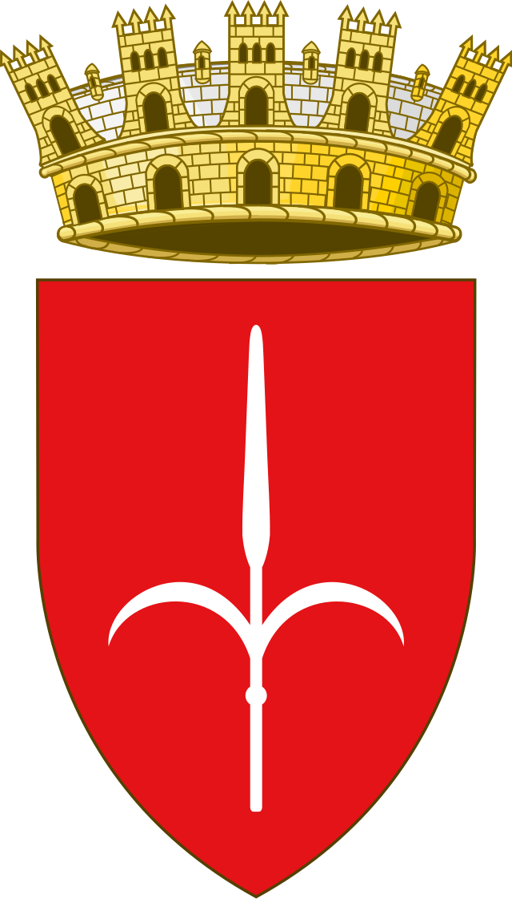
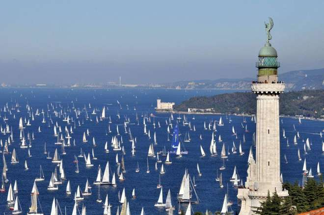
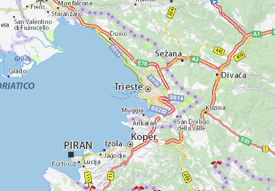
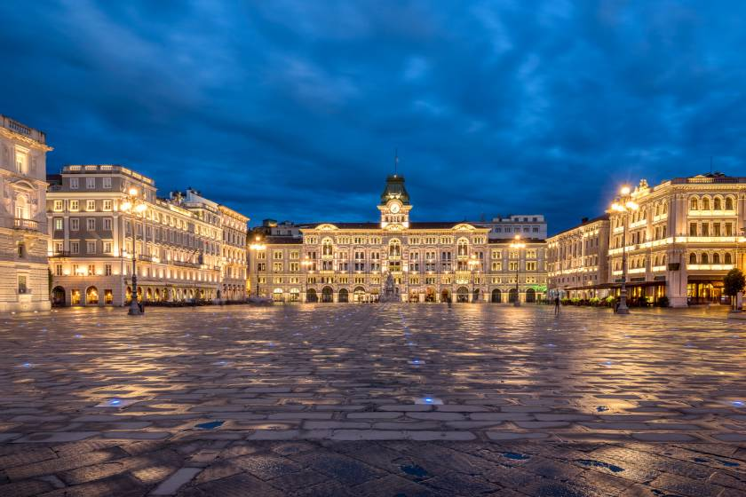
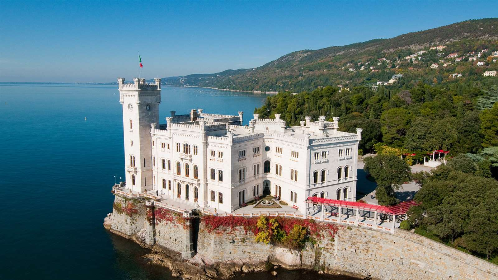

Trieste


Trieste è un comune italiano di 199 988 abitanti, capoluogo della regione italiana a statuto speciale Friuli-Venezia Giulia, affacciato sull'omonimo golfo nella parte più settentrionale dell'Alto Adriatico, fra la penisola italiana e l'Istria, a qualche chilometro dal confine con la Slovenia nella regione irredenta della Venezia Giulia.
Rappresenta da secoli un ponte tra l'Europa centrale e quella meridionale, mescolando caratteri mediterranei, mitteleuropei e slavi ed è il comune più popoloso e densamente popolato della regione. Il porto di Trieste dal 2016 è il porto italiano col maggior traffico merci ed è uno dei più importanti nel sud Europa.
Trieste è la città più cosmopolita d’Italia. Vi si respira il glorioso passato asburgico e negli incroci di lingue, popoli e religioni che ancora la caratterizzano si intuisce con facilità la sua anima insieme mitteleuropea e mediterranea.
L'etimologia del nome Tergeste è di origine preromana con base preindoeuropea: terg in antico illirico significa infatti "mercato", mentre il suffisso –este è tipico della lingua venetica (da non confondersi con la moderna lingua veneta), idioma parlato dagli antichi Veneti, popolazione indoeuropea stanziata nell'Italia Nordorientale. Il termine terg si ritrova anche nella lingua slava ecclesiastica antica nella forma tьrgъ con il medesimo significato, ovvero "mercato" (in sloveno, serbo e croato "mercato" si traduce invece trg oppure in tržnica, mentre in polacco targ e in scandinavo antico torg).
Un'ipotesi alternativa che tenta di spiegare l'origine del nome Tergeste, che è stata riportata per la prima volta dal geografo di età augustea Strabone, vorrebbe che questo toponimo derivi dal latino tergestum, poi traslitterato in Tergeste. I fatti storici che giustificherebbero l'etimologia latina di Tergeste sono legati al fatto che i legionari romani avrebbero dovuto combattere tre battaglie per avere ragione delle popolazioni indigene abitanti l'antico insediamento preromano. Tergestum sarebbe infatti la contrazione di Ter-gestum bellum (dal latino ter = tre volte e gerere bellum = far guerra, da cui il participio passato gestum bellum).
I nomi moderni di Trieste, nelle lingue storicamente parlate nella città giuliana, sono Trieste in italiano, Tergestum o Tergeste in latino, Trst in sloveno e in croato, Triest in tedesco, Trieszt in ungherese e Трст/Trst in serbo. Per quanto riguarda gli idiomi locali, le denominazioni della città giuliana sono Trièst in dialetto tergestino, e Trieste in dialetto triestino e in lingua veneta. Da notare che sloveno, croato, tedesco, ungerese e sebo non sono mai state parlata dalla maggioranza della popolazione ma solo da sparute minoranze.
Il nome sloveno della città, Trst, significa anche canneto.

Trieste, affacciata sull'omonimo golfo nella parte più settentrionale dell'Alto Adriatico, si colloca fra la penisola italiana e l'Istria, distante qualche chilometro dal confine con la Slovenia nella regione storica della Venezia Giulia.
Il golfo di Trieste.
In particolare la Venezia Giulia è una regione storico-geografica italiana posta all'estremo nord-est della penisola italiana, tra le Alpi Giulie e il mare Adriatico, comprendendo le terre poste fra golfo di Trieste, il golfo di Fiume e il Carso, altopiano roccioso calcareo appartenente alle Alpi Dinariche che si estende a cavallo tra il nord-est dell'Italia, la Slovenia e la Croazia.
Il nome Venezia Giulia è stato ideato nel 1863 dal glottologio e friulanista di Gorizia Graziadio Isaia Ascoli per contrapporlo al nome Litorale, creato invece dalle autorità austriache nel 1849 per identificare la regione.
La Venezia Giulia, insieme alla Venezia Tridentina e alla Venezia Euganea, costituisce il Triveneto, termine che apparve in alcuni circoli culturali a metà dell'Ottocento, poco dopo la seconda guerra d'indipendenza italiana, coniato nel 1863 sempre da Graziadio Isaia Ascoli, con l'intento di marcare di italianità (senza sfumature irredentiste) terre come la Venezia Tridentina e la Venezia Giulia, che all'epoca erano ancora sottoposte al dominio asburgico che solo successivamente alla prima guerra mondiale furono annesse al Regno d'Italia.
Il territorio cittadino di Trieste è occupato prevalentemente da un pendio collinare che cresce di altitudine fino a terreno montagnoso anche nelle zone limitrofe all'abitato. Geologicamente possiamo suddividere il territorio in due zone. La prima, comprende l'altopiano carsico, detto appunto Carso, noto per le sue grotte e le sue doline, che digrada bruscamente verso il mare con un'imponente scarpata. Il punto più elevato del territorio comunale raggiunge i 674 metri (Monte Cocusso). La seconda zona geologica comprende il centro città e larga parte delle periferie più popolose, che poggia sul cosiddetto "Flysch di Trieste".
Il comune di Trieste è diviso in varie zone climatiche, a seconda della distanza della zona dal mare e della sua altitudine. Caratteristica di questa zona è l'abbondanza di terra rossa, terreno con una presenza accentuata di frazione argillosa rossa derivante dall'erosione del calcare, particolarmente adatta alla coltivazione dell'uva da vino.

- Piazza unità d'Italia
La più grande piazza d'Europa aperta sul mare. La piazza ospita il Palazzo del Municipio con il famoso orologio di Micheze e Jacheze che dal 1876 scandiscono il tempo della città con i loro rintocchi, la Fontana dei Quattro Continenti, il palazzo del Governo, lo storico Caffè degli Specchi e altri palazzi. La piazza è particolarmente suggestiva di sera con le luci colorate che la illuminano. Poco distante si trovano anche il Teatro Verdi e il molo Audace
- Castello di Miramare
Il castello venne costruito per volere di Massimiliano d'Asburgo, arciduca d'Austria e imperatore del Messico, tra il 1856-1860, su progetto dell'architetto Carl Junker. L'edificio di pietra bianca d'Istria dà sul mare ed è circondato da un vasto parco di 22 ettari, progettato dallo stesso Massimiliano che fu un grande appassionato di botanica. Tutta l'area intorno al piccolo promontorio fa parte della Riserva Marina protetta del WWF.
- Risiera di San Sabba
La Risiera di San Sabba era uno stabilimento per la pilatura del riso, che durante la II Guerra Mondiale venne utilizzato dai nazisti come campo di concentramento e fu l'unico campo di sterminio dotato di forno crematorio sul territorio italiano. Nel 1965 è stato proclamato Monumento Nazionale.